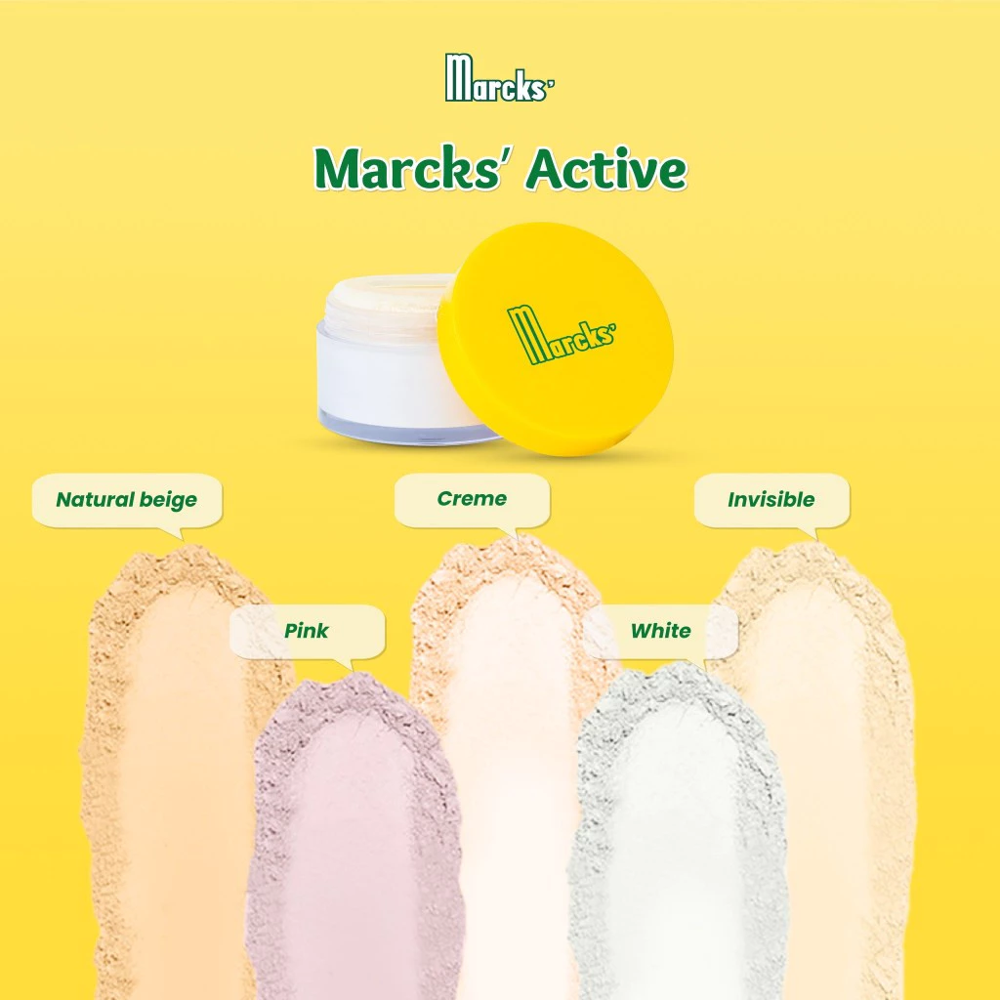
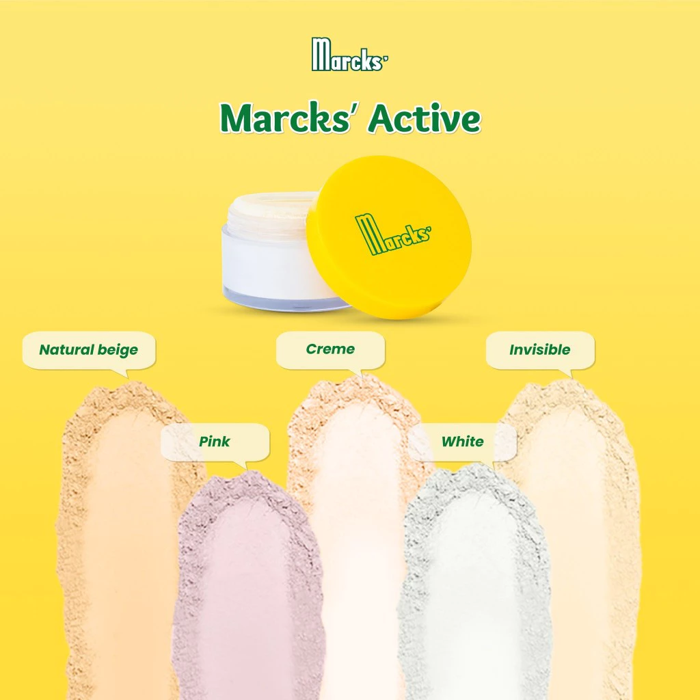
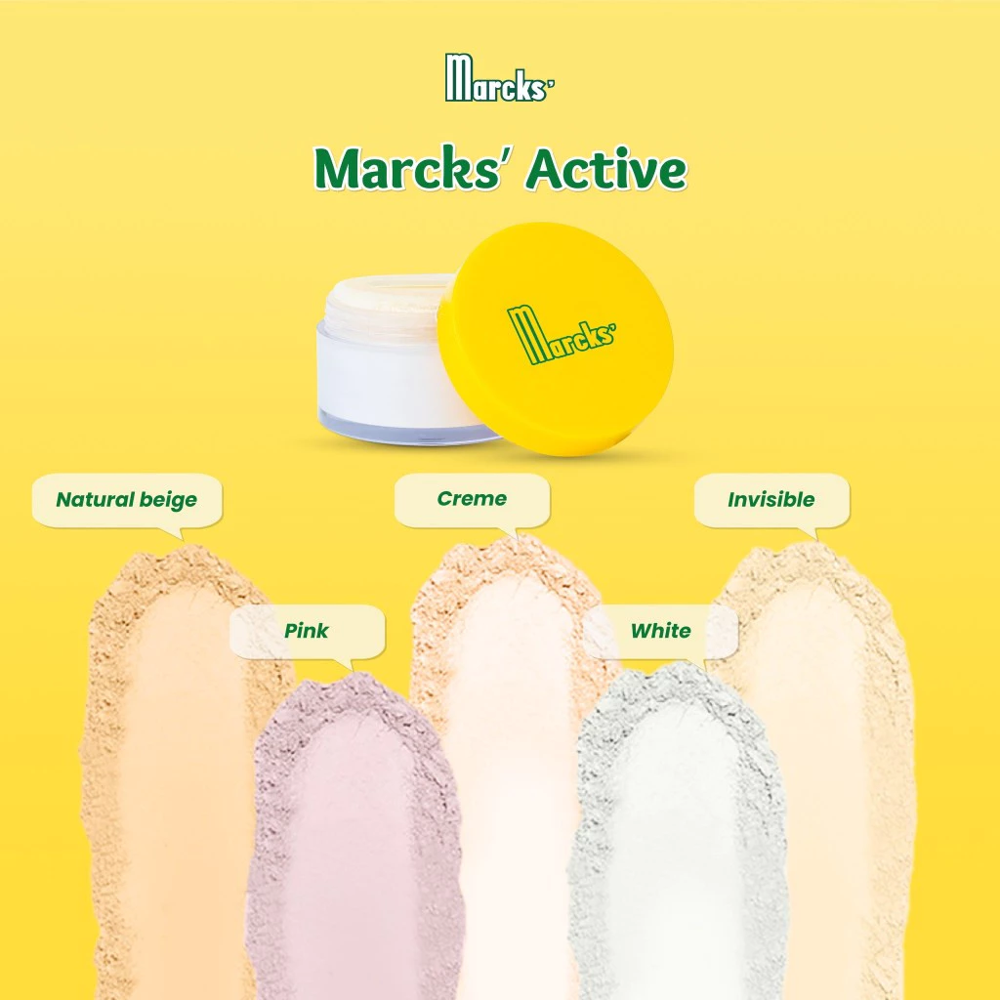

Bedak Marcks merupakan salah satu produk kosmetik lokal legendaris yang telah hadir di Indonesia sejak puluhan tahun lalu. Diproduksi oleh PT. Kimia Farma, bedak ini dikenal dengan kemasannya yang khas berwarna kuning serta logonya yang ikonik. Keberadaannya yang bertahan lama membuktikan bahwa Bedak Marcks telah menjadi pilihan terpercaya bagi banyak orang, terutama mereka yang mencari produk berkualitas dengan harga terjangkau. Memiliki formulasi ringan yang dirancang untuk semua jenis kulit, termasuk kulit sensitif. Bedak Marcks mengandung Zinc Oxide, yang membuat bedak ini mampu mengurangi peradangan sekaligus mengontrol minyak berlebih pada wajah. Berkat sifatnya yang hipoalergenik, produk ini minim menyebabkan iritasi, sehingga cocok digunakan sehari-hari, bahkan oleh remaja dan ibu hamil. Meski memiliki varian yang ikonik, Bedak Marcks terus berinovasi dengan menghadirkan berbagai varian bedak yang disesuaikan dengan kebutuhan perempuan Indonesia. Tak hanya menyediakan bedak, kini Marcks juga menyediakan berbagai macam skincare guna memenuhi kebutuhan konsumen.


Menjaga kesehatan kulit merupakan langkah penting untuk menciptakan tampilan yang segar, alami, dan memancarkan kepercayaan diri.
Read MoreMemilih bedak yang tepat adalah kunci untuk mendapatkan tampilan makeup yang flawless. Berikut merupakan panduan untuk memilih bedak Marcks yang tepat
Read MoreBedak adalah salah satu produk makeup yang tidak boleh terlewatkan dalam rutinitas kecantikan sehari-hari. Dengan bedak yang tepat, wajah Kamu akan tampak halus dan bebas kilap sepanjang hari.
Read More